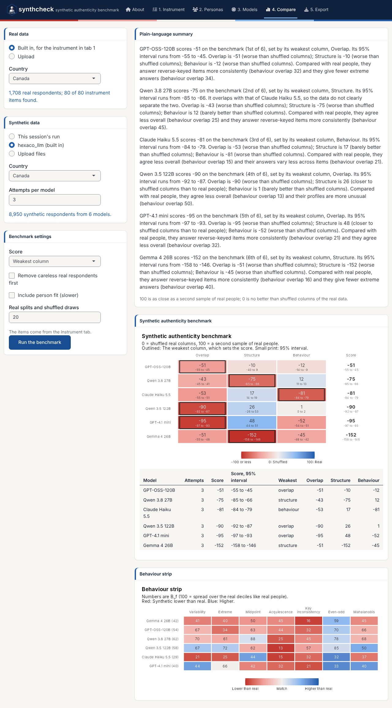
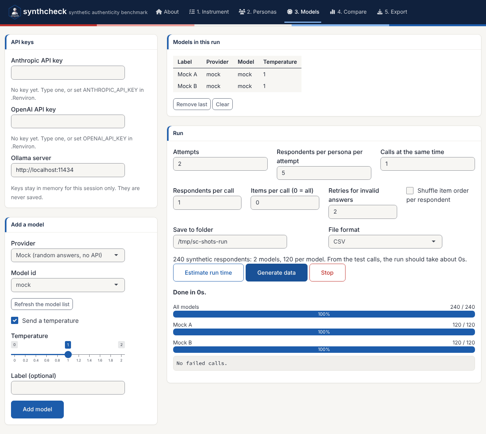
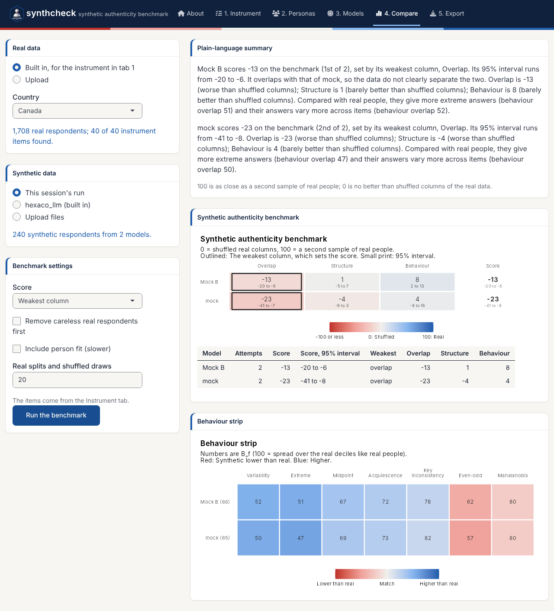

Experimental. These demos walk through the app from start to finish. The first two need no API key, so you can try them right away. The third is a real run with your own questionnaire. For what every control does, see the tour of the app.
The app opens on the About tab. Click Start with the instrument to go straight to the first step, or Take the guided tour for a walkthrough that points to each control in turn (it needs the cicerone package). The demos below start on the Instrument tab.
Demo 1: Benchmark the six built-in models
The package ships synthetic answers from six language models to the
IPIP-HEXACO items (hexaco_llm), so you can run the
benchmark without generating anything.
- Instrument: Keep IPIP-HEXACO (built in) and the traits Honesty-Humility and Conscientiousness (80 items).
- Compare: Under Real data, choose hexaco_real (built in) and Canada. Under Synthetic data, choose hexaco_llm (built in), Canada and 3 attempts per model.
- Switch off Include person fit for a faster first run, and click Run the benchmark.

The summary names each model’s score and its weakest column, and the behaviour features that differ most from real people. On these two traits every model lands below 0 on at least one column: Its respondents are further from real Canadians than shuffled real answers are. That is a strict baseline, and the table still ranks the models and shows where each one falls short. Switch person fit back on to add the person fit feature and the “too coherent” line to the summary.
The same benchmark in code:
items <- hexaco_items[hexaco_items$trait %in% c("H", "C"), ]
real <- hexaco_real[hexaco_real$country == "Canada", ]
ca <- hexaco_llm[hexaco_llm$country == "Canada" & hexaco_llm$attempt <= 3, ]
bm <- authenticity_benchmark(as_synthetic_list(ca), real, items, fit_scales = character(0))
summarise_benchmark(bm)Demo 2: A practice run with the mock provider
The mock provider answers at random, without an API, so a practice run costs nothing and shows every step of a real one.
- Instrument: Keep IPIP-HEXACO and choose only Honesty-Humility (40 items).
- Personas: Choose Build a grid and keep the example: Three ages, two genders and two countries make 12 personas.
- Models: Choose the provider Mock (random answers, no API) and click Add model. Change the label to Mock B and add it again, so there are two models to compare.
- Set 2 attempts and 5 respondents per persona per attempt. The plan says 240 synthetic respondents, 120 per model.
- Click Estimate run time, then Generate data. The progress bar counts the respondents and shows the time left.

- Compare: Keep This session’s run and real data from hexaco_real, Canada, and run the benchmark.

Random answers land close to 0 on all three columns, which is what the floor means: No better than shuffling the real answers within each item. Overlap falls below 0 here because random answers on 40 items average out to the middle of the scale, so the synthetic people bunch into a few middle score deciles. The behaviour strip shows the other telltale sign of random answers: More extreme answers and more variability than real people (blue).
- Export: Download the data in the format you need, and the R script that repeats the comparison.
Demo 3: Your own questionnaire, with real models
For a real study, you bring three things: The items, the personas and real answers to the same items.
-
Instrument: Choose Upload an item
table, click Download a template, and fill it
in with your items. Use the same item names as the columns of your real
data. Mark reverse-keyed items with
TRUEinreverse, so that the benchmark can key them. Set the lowest and highest category and check the labels and instructions. - Personas: Upload a persona table (download the template on the same tab), or build a grid from the attributes that matter in your population, such as age, gender and region.
-
Models: Enter your API keys, or set
ANTHROPIC_API_KEYandOPENAI_API_KEYin.Renvironbefore you start R. Add the models to compare, for exampleclaude-haiku-5-5andgpt-4.1-nanoat temperature- For a local model, start Ollama, choose Ollama (local) and click Refresh the model list.
- Start small: 1 attempt and 2 respondents per persona. Click Estimate run time to check the keys and see the time for a full run. Then raise the attempts (5 or more give a sense of stability) and generate.
- Compare: Upload your real data (CSV, Excel or RDS, one row per person, the items as columns) and run the benchmark.
- Export: Save the data and the R script with your results.
The same run in code:
ins <- sc_instrument(read.csv("my_items.csv"), scale = c(1, 5), name = "My survey")
per <- sc_personas(read.csv("my_personas.csv"))
syn <- generate_synthetic(ins, list(sc_model("anthropic"), sc_model("openai")), per,
attempts = 5, respondents = 10, parallel = 8, output = "my_run")
real <- read.csv("my_real_data.csv")
bm <- authenticity_benchmark(as_synthetic_list(syn), real, ins$items)
gg_benchmark(bm)
summarise_benchmark(bm)Things to keep in mind
- Cost. The number of calls is models × attempts × personas × respondents. Check the plan and the time estimate before a large run.
- Independence. Keep one respondent per call unless cost forces a larger batch. Respondents in the same call see each other’s answers.
- Keys. Run the app on your own computer. Do not deploy it on a shared server with keys typed in.
- What the benchmark says. It tells you which model resembles your real respondents most, and on which side it falls short. It does not show that synthetic data can replace a field test.